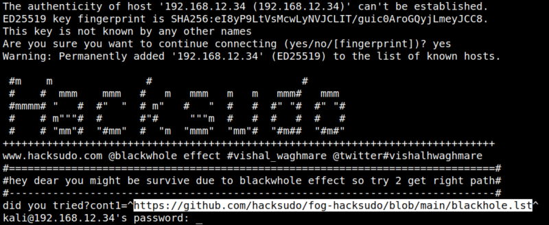
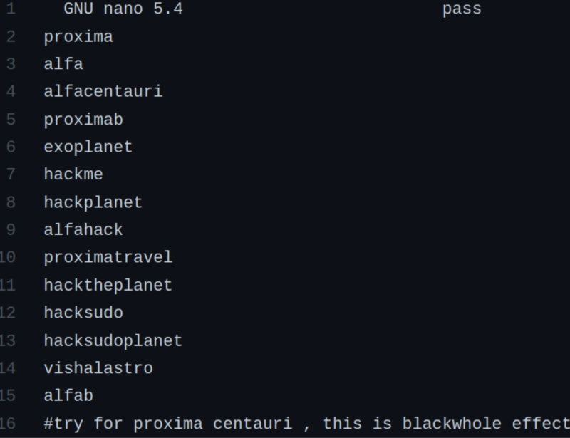

4.1 Connecting via SSH
1. Connect via SSH the victim's machine with the following credentials.
$ssh 192.168.12.34
Output:

You don't have a password. But you can visit the URL from the banner and you'll get a dictionary.
2. Visit https://github.com/hacksudo/fog-hacksudo/blob/main/blackhole.lst.
Output:
